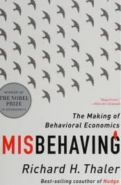

Misbehaving
|  | |
| archive.org | |
| 2015 | |
RICHARD H. THALER: WINNER OF THE 2017 NOBEL PRIZE IN ECONOMICS Shortlisted for the Financial Times and McKinsey Business Book of the Year Award ECONOMIST, FINANCIAL TIMES and EVENING STANDARD books of the year From the renowned and entertaining behavioural economist and co-author of the seminal work Nudge, Misbehaving is an irreverent and enlightening look into human foibles. Traditional economics assumes that rational forces shape everything. Behavioural economics knows better. Richard Thaler has spent his career studying the notion that humans are central to the economy - and that we're error-prone individuals, not Spock-like automatons. Now behavioural economics is hugely influential, changing the way we think not just about money, but about ourselves, our world and all kinds of everyday decisions. Whether buying an alarm clock, selling football tickets, or applying for a mortgage, we all succumb to biases and make decisions that deviate from the standards of rationality assumed by economists. In other words, we misbehave. Dismissed at first by economists as an amusing sideshow, the study of human miscalculations and their effects on markets now drives efforts to make better decisions in our lives, our businesses, and our governments. Coupling recent discoveries in human psychology with a practical understanding of incentives and market behaviour, Thaler enlightens readers about how to make smarter decisions in an increasingly mystifying world. He reveals how behavioural economic analysis opens up new ways to look at everything from household finance to assigning faculty offices in a new building, to TV quiz shows, sports transfer seasons, and businesses like Uber. When economics meets psychology, the implications for individuals, managers and policy makers are both profound and entertaining.